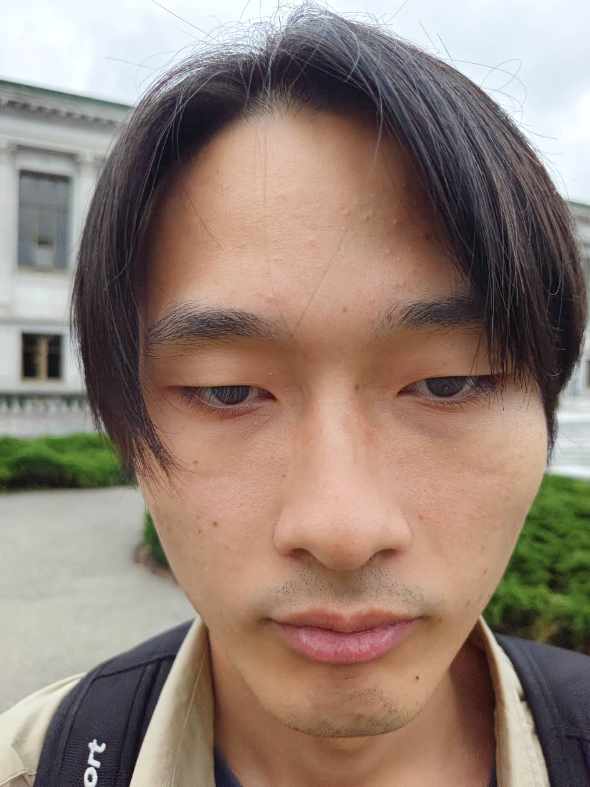
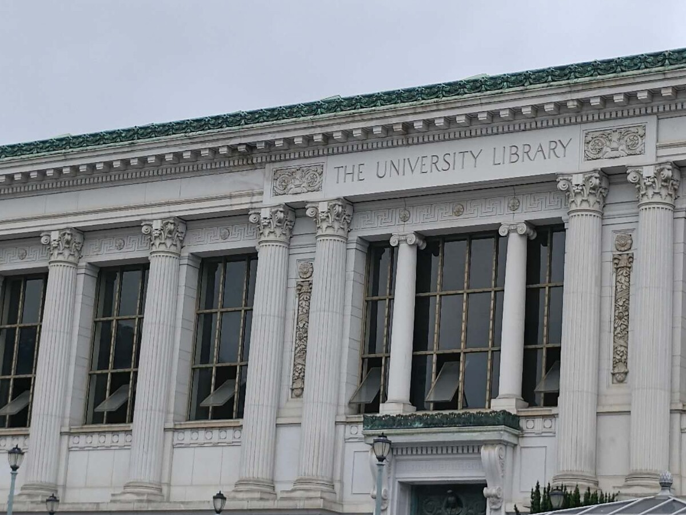
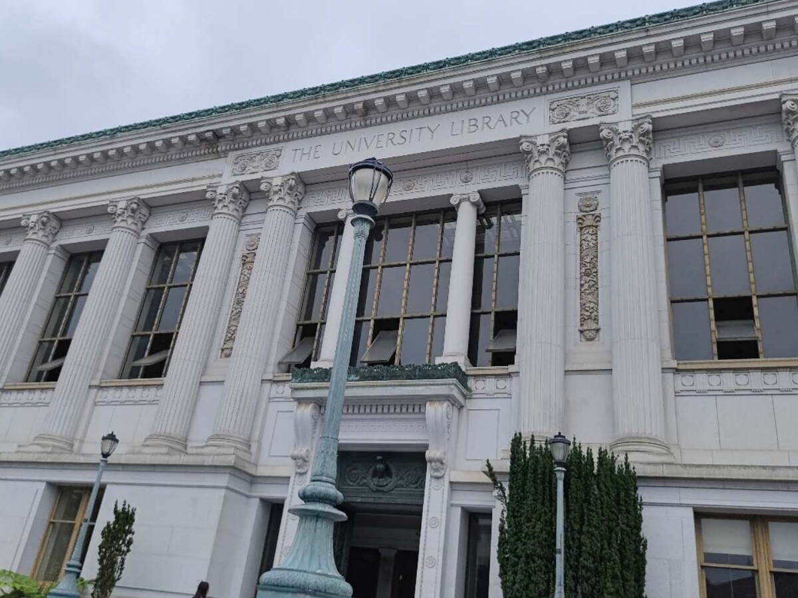
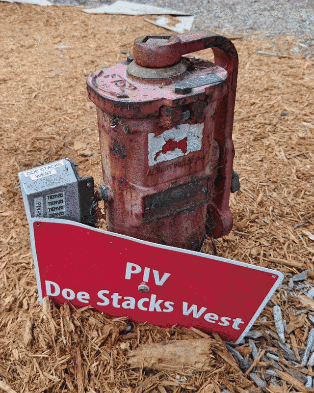
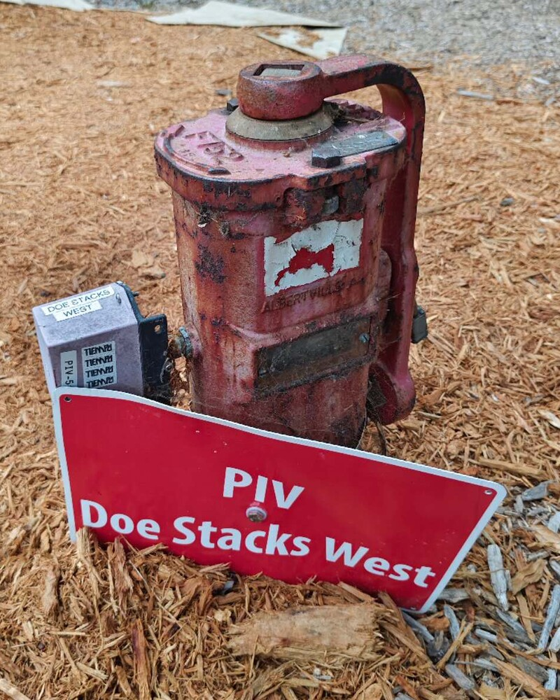
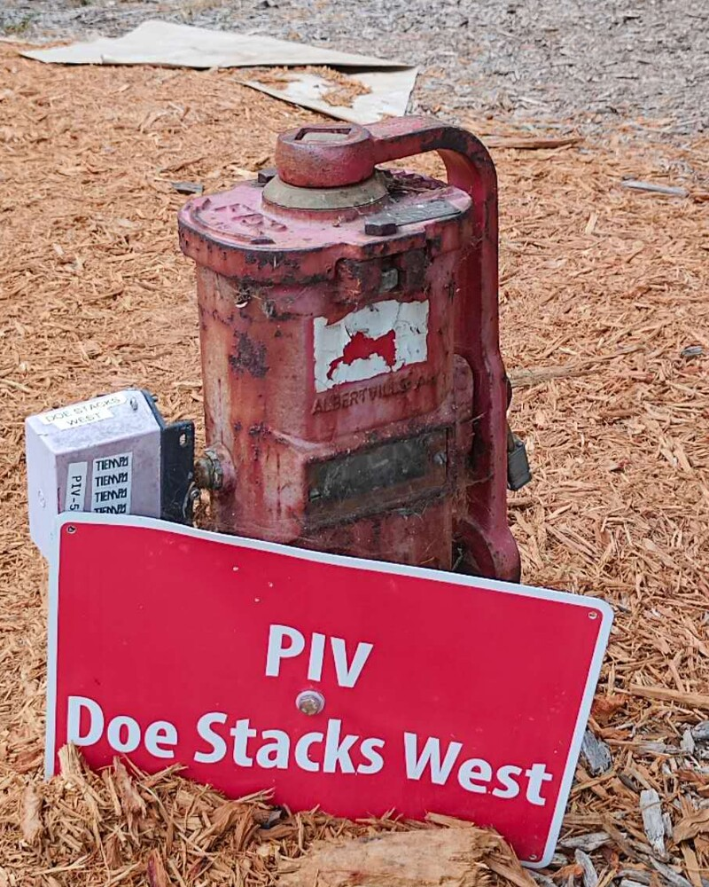
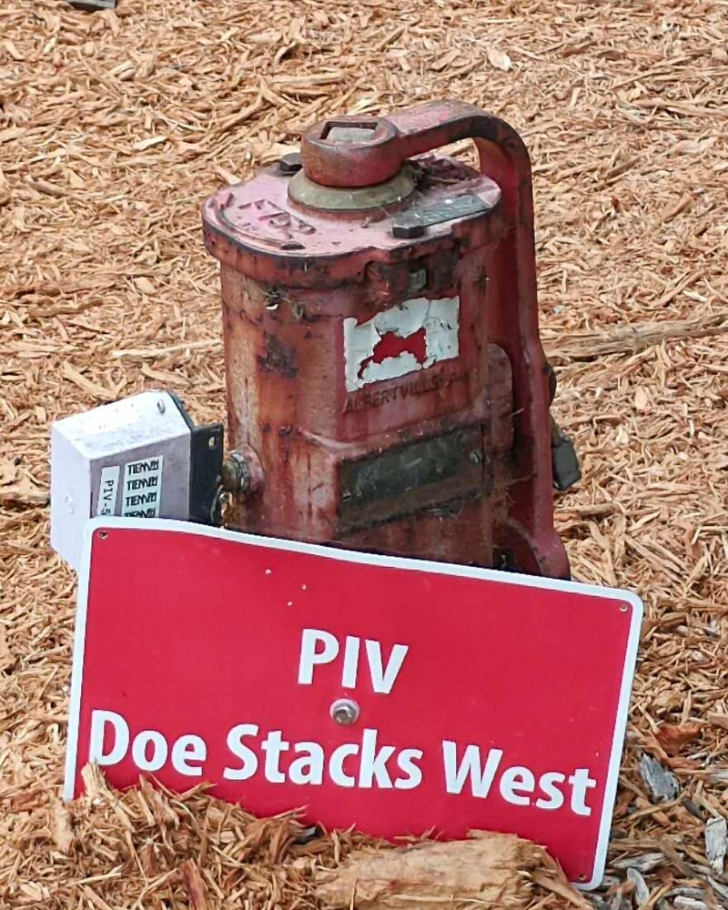
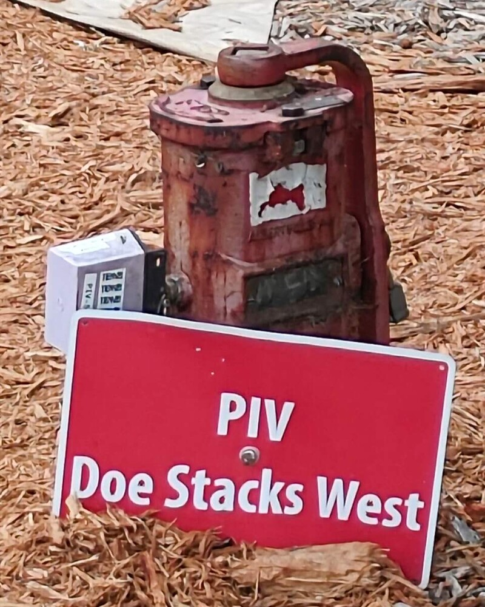
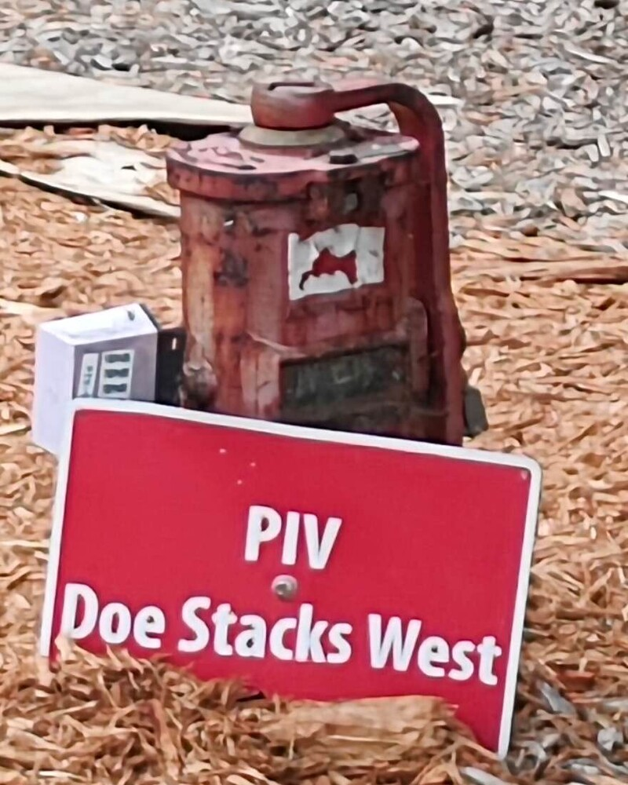
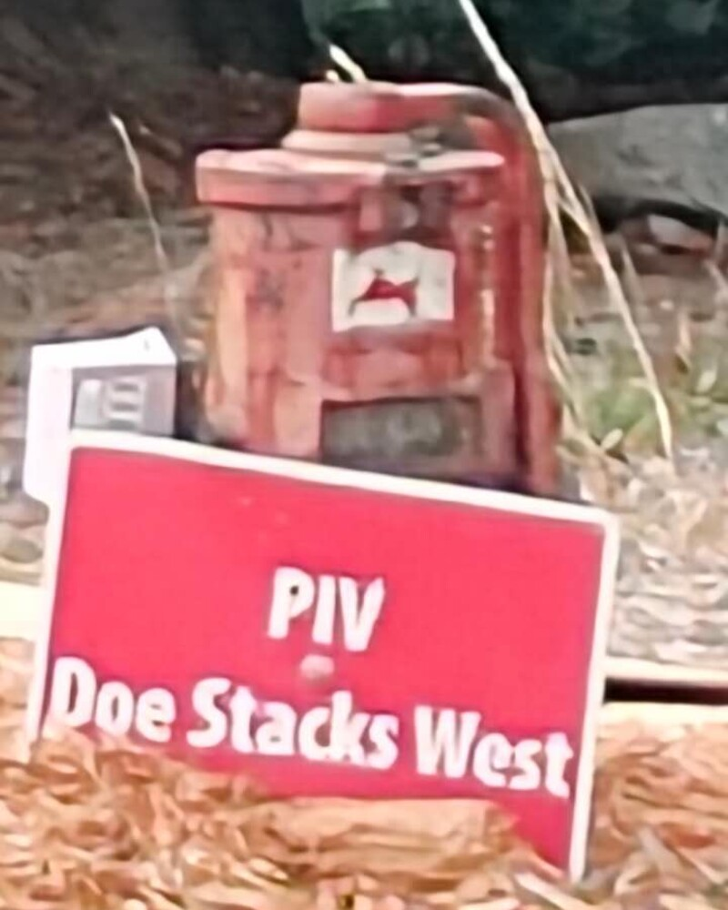

Programming Project 00
Becoming
Friends
With Your
Camera
01 / 03
Distance changes perspective
The Wrong Way
vs. The Right Way
A close portrait exaggerates the depth between facial features. By stepping back and zooming in, the framing stays similar while the perspective becomes more natural.
The camera-to-subject distance determines perspective; focal length controls how tightly that perspective is framed.

02 / 03
Space can look flatter
Architectural
Perspective Compression
Three aligned views make the change easier to compare. The two distant zoomed frames compress the facade; the nearby wide frame restores a stronger sense of depth.


03 / 03
Move back · Zoom in
The Dolly Zoom
The subject remains nearly fixed while the world behind it changes. Each step backward is paired with a tighter focal length, producing the classic “Vertigo” effect.
- 01Frame the subject
- 02Step backward
- 03Zoom to match
- 04Repeat & animate

-

F.01 / Near -

F.02 -

F.03 -

F.04 -

F.05 -

F.06 / Far